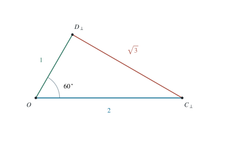

P0120 · 思维训练
固定二面角中的距离与垂直关系
以垂直截面统一证明距离界，并给出不成立命题的具体反例。
1 题目
空间中 是两个不同定点。点 到直线 的距离为 ，点 到该直线的距离为 ，二面角 为 。判断下列正确选项。
A．；B．；C．若 ，则 ；D．若 ，则 。其中直线垂直表示方向向量的内积为零。

正交截面中的距离为 ；任意高度差只会增加三维距离。
2 思路与提示
取 为原点、 为纵轴。两个高度参数自由变化，截面投影的长度和夹角却固定。
3 解答展开 / 收起
3.1 覆盖全部配置的坐标
绕 选择横轴，令 、。这保留了所有可能的沿棱高度，且两个截面射线夹角为 。差向量平方给
因此 B 正确，且等号恰在 时成立。
3.2 证明条件垂直
等价于 。此时 ，它与棱方向 以及平面内的截面方向 的内积均为零。两方向独立并张成平面 ，故 C 正确。
3.3 用合法坐标否定其余命题
对 A，取 ，则 ，角度小于 ，故 A 错。
对 D，取 ，则平面 为水平面，满足题设的垂直条件。但 ，故 D 错。答案为 B、C。
4 方法与讨论
把点都画在同一截面上能发现距离最小值，但不能用这种特殊画法证明 A 那样的全称角度命题。一般坐标先保留高度差，等号时才落回截面，逻辑次序清楚且没有漏掉自由度。